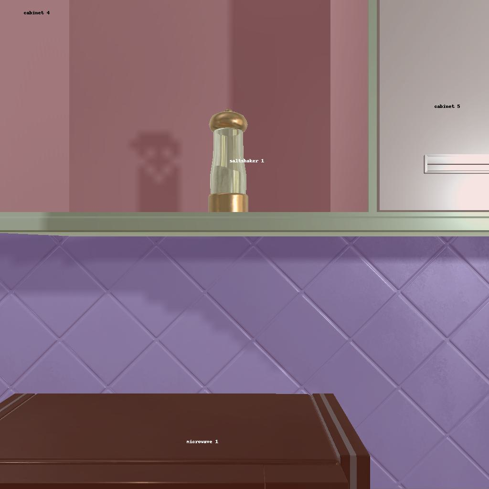
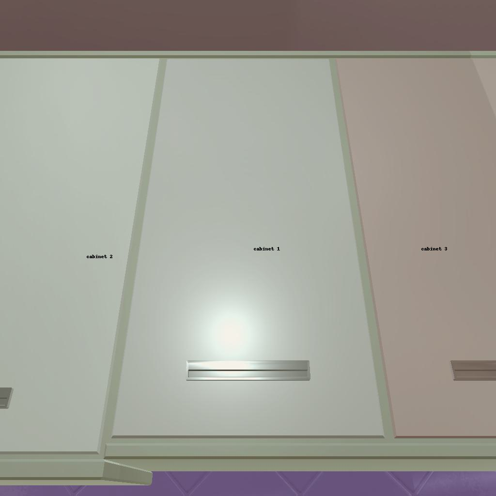

---------------------------------------------------------task: 21---------------------------------------------------------
--------------------------------------------------------------------------------------------------------------------------------------------------------------------
--------------------------------------------------------------------------------------------------------------------------------------------------------------------
Step:--------------------------------------------------------------------------9-------------------------------------------------------------------------------
----------------------------------------
VLM Prompt:
Image1:
Image2:
**Instruction**
1. Analyze the provided image to identify all visible household objects, focusing on those relevant to the task description "put a hot cup in countertop."
2. Use the analysis of the image and the task hint "The agent must find an object of the desired type, pick it up, go to a microwave, heat the object with the microwave, then find the correct location to place it, and put it down there. The agent does not need to use the microwave button or open the microwave to heat the object, and the agent just needs to do action that is "heat the object with the microwave"." to answer the question: what is the most reasonable action in the choices for the task description "put a hot cup in countertop"?
4. Decide and write the answer using the template: The answer is: (i): , where i is the real number. If there is no desired object in the image, search every place based on **Initial Observation** to find the object. And if no one is exactly correct, choose a similar answer.
**Initial Observation**
You are in the middle of a room. Looking quickly around you, you can see cabinet (1-6), microwave (1), countertop (1-2), coffeemachine (1), toaster (1), sink (1), sinkbasin (1), fridge (1)
**Answer Choices**
(1): go to cabinet 2
(2): go to microwave 1
(3): go to cabinet 5
(4): go to cabinet 6
(5): go to countertop 1
(6): go to coffeemachine 1
(7): go to toaster 1
(8): go to countertop 2
(9): go to sink 1
(10): go to sinkbasin 1
(11): go to fridge 1
(12): open cabinet 1
(13): close cabinet 1
(14): examine cabinet 1
**Answer**
Let's think step by step by following the instructions.
----------------------------------------
----------------------------------------
Original Response:
Firstly, we need to find a cup. From the initial observation, we know there are several cabinets (1-6) in the room. Cups are usually kept in cabinets, so we should check the cabinets first. Since the images provided do not show any cups on the countertops or other visible areas, we can rule out the options that involve going to appliances or other areas (options 2, 5, 6, 7, 8, 9, 10, 11).
The next step after finding a cup would be to heat it in the microwave. However, since the task description states that the agent does not need to use the microwave button or open the microwave, we can assume the heating action is abstracted away, and we just need to focus on finding the cup.
Therefore, the most reasonable action from the choices provided would be to search the cabinets for a cup. Since we cannot determine which cabinet the cup is in without additional information, we should start from cabinet 1 and search systematically. The action related to this is to open cabinet 1 to look for the cup.
The answer is: (12): open cabinet 1.
----------------------------------------
----------------------------------------
>>> Refine Original VLM Response and Get Pure Action: open cabinet 1
----------------------------------------
-----------------------------------------------------------------
Running time: 10.406917572021484 seconds
Total Money: 10.315170000000006
-----------------------------------------------------------------
-----------------------------------------------------------------
Text Observation:You open the cabinet 1. The cabinet 1 is open. In it, you see a plate 1.
-----------------------------------------------------------------
UNSUCCEED